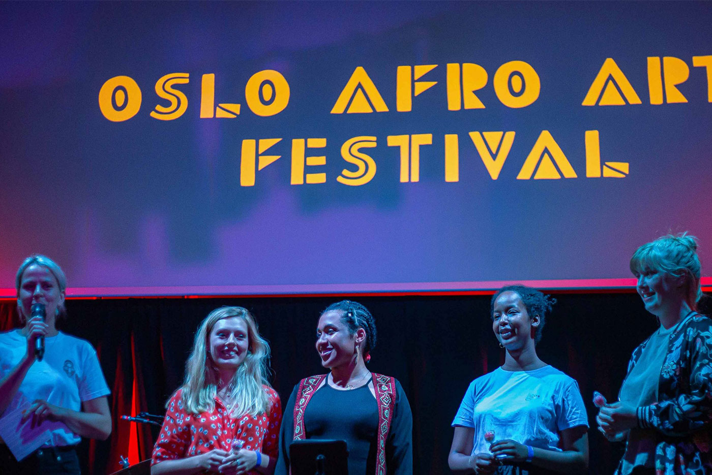

AUGUST, 9, 2021
Oslo Afro Arts Festival 2021

COVID-19 has brought the world to an almost standstill with a lot of
uncertainty. A lot of people have lost their jobs and source of
income, artists being one of the groups largely affected as they
could no longer perform for their audiences. Social distance has had
to be maintained.
OAAF 2021 wants to offer a place for musicians once again to meet
with each other and the audience. In the program this year, we will
include a concert by African artist refugees, artists of African
descendants living in Norway and putting on stage the older and
younger generation of Artists to showcase their passion of African
arts.
This is a journey of hope, for those who have had to flee their
homes for a better and safer life, for those who have made other
continents their new home as they migrated, for those who yearn to
learn from their heritage and those who yearn to learn from the
future of African art. OAAF will in 2021 create a platform to bring
everyone closer, to find a home in the arts among COVID-19, to show
resilience of human kind.
Oslo Afro Arts Festival wants to keep us connected through African music and art in a time of separation